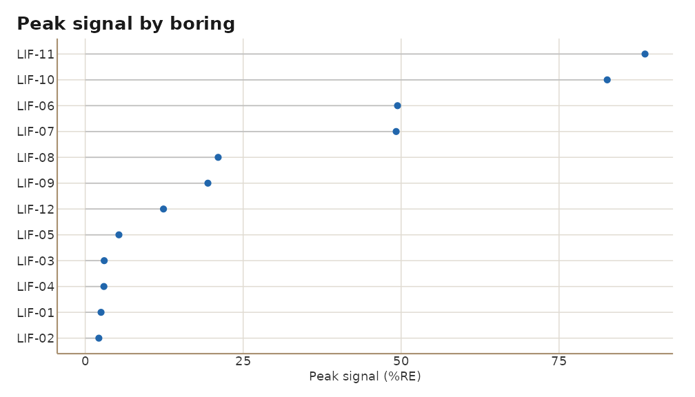
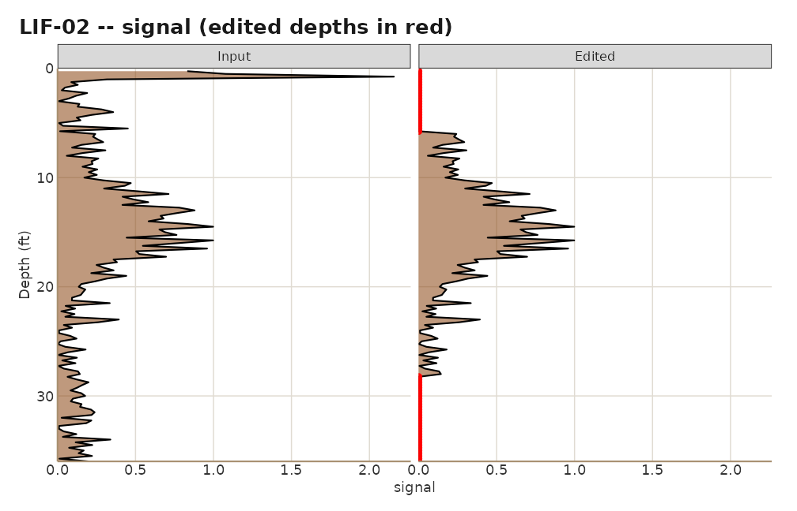
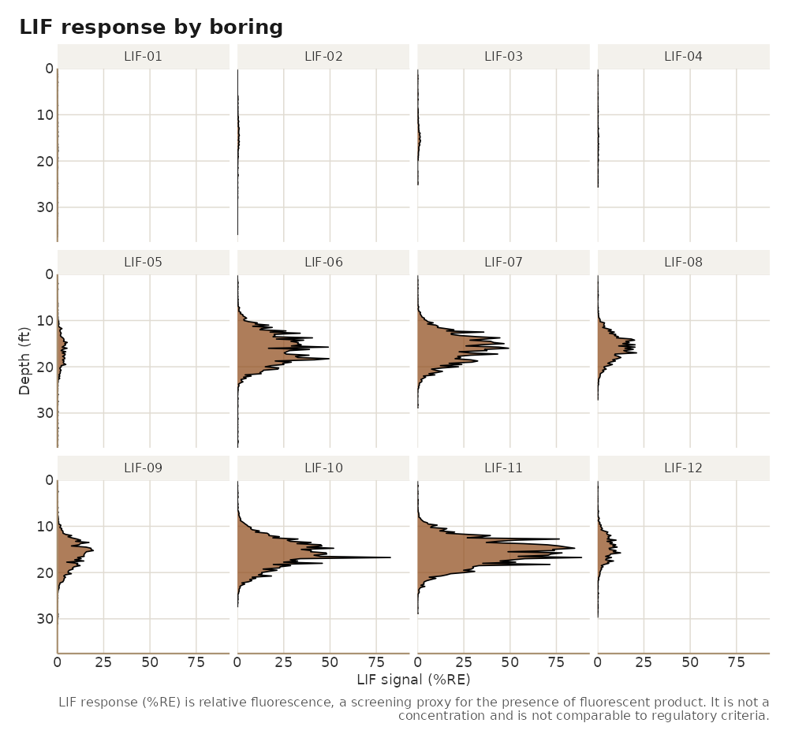
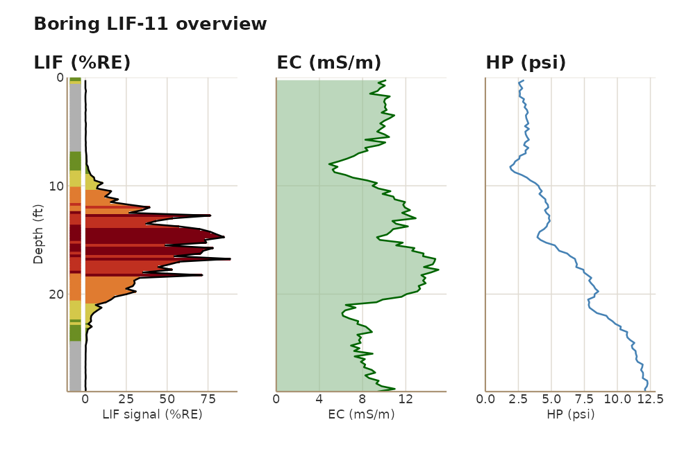
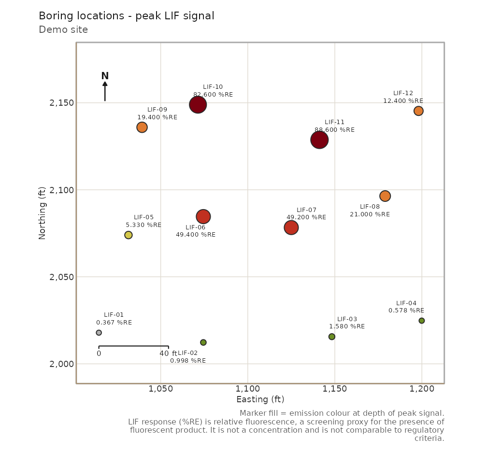

What LIF data looks like
A Laser-Induced Fluorescence (LIF) probe is pushed into the ground on a direct-push rig. A laser excites the soil through a sapphire window and the probe records the fluorescence response every fraction of a foot. Petroleum products and other fluorescent non-aqueous phase liquids light up; clean soil mostly does not. The result for each boring is a log: depth against response, usually with a few companion channels such as electrical conductivity, hydraulic push pressure, and an emission colour that hints at the product type.
A survey delivers one log file per boring plus a table of boring
coordinates. lifr turns that folder into a data frame,
helps you clean it, and renders plots and a report.
1. Import
Point lif_import() at the survey folder. It reads every
.lif.dat.txt, finds the locations.csv, joins
the coordinates, and returns one data frame with a row per depth
reading.
demo <- system.file("extdata", "demo", package = "lifr")
lif <- lif_import(demo)
lif
#> <lif_data> 12 boring(s), 1489 sample(s), depth 0.2-37.5 ft, 0 edit(s)
#> channels: signal, ec, hp, color
#> easting northing depth signal boring msl ec hp color
#> 1 1014.5 2017.9 0.25 2.506 LIF-01 149.6 8.87 2.79 #6B8E23
#> 2 1014.5 2017.9 0.50 0.206 LIF-01 149.6 9.31 2.41 #B0B0B0
#> 3 1014.5 2017.9 0.75 2.146 LIF-01 149.6 9.75 2.59 #6B8E23
#> 4 1014.5 2017.9 1.00 0.095 LIF-01 149.6 9.40 2.83 #B0B0B0
#> 5 1014.5 2017.9 1.25 0.208 LIF-01 149.6 10.38 2.97 #B0B0B0
#> 6 1014.5 2017.9 1.50 0.098 LIF-01 149.6 9.38 2.68 #B0B0B0
#> 7 1014.5 2017.9 1.75 0.213 LIF-01 149.6 10.07 2.72 #B0B0B0
#> 8 1014.5 2017.9 2.00 0.148 LIF-01 149.6 9.48 3.08 #B0B0B0
#> 9 1014.5 2017.9 2.25 0.050 LIF-01 149.6 10.04 2.86 #B0B0B0
#> 10 1014.5 2017.9 2.50 0.003 LIF-01 149.6 9.46 3.01 #B0B0B0
#> # ... 1479 more row(s)Every column the instrument recorded is kept. The ones
lifr understands are renamed to a fixed set:
| Column | Meaning | Units |
|---|---|---|
boring |
Boring name, from the file name | |
depth |
Depth below ground surface | ft |
signal |
LIF response | %RE |
easting, northing
|
Coordinates from the locations file | ft (projected) |
msl |
Ground-surface elevation from the locations file | ft |
ec |
Electrical conductivity, when logged | mS/m |
hp |
Hydraulic push pressure, when logged | psi |
color |
Emission-wavelength hex colour, when logged |
Anything else keeps a cleaned snake_case version of its header. See
vignette("data-format") for the file formats, legacy
layouts, and what happens when a boring is missing from the locations
file.
2. Summarise
summarize_lif() returns the standard QA tables.
qa <- summarize_lif(lif)
qa$overview
#> n_borings n_samples min mean geom_mean geom_mean_n_excluded median
#> 1 12 1489 0.001 4.796974 0.5000454 0 0.265
#> max pct_detect
#> 1 88.607 100
head(qa$by_boring)
#> boring n peak peak_depth mean geom_mean geom_mean_n_excluded p50
#> 1 LIF-11 116 88.607 16.75 17.428155 2.1299962 0 2.5760
#> 2 LIF-10 110 82.625 16.75 11.949918 2.0692561 0 2.2865
#> 3 LIF-06 150 49.434 18.25 7.987127 0.9368046 0 0.3905
#> 4 LIF-07 116 49.217 16.00 10.106966 1.6164595 0 1.8255
#> 5 LIF-08 109 21.045 17.00 4.157615 0.8652894 0 0.8120
#> 6 LIF-09 125 19.417 15.25 3.646552 0.7762908 0 0.5120
#> p95
#> 1 74.57925
#> 2 45.34470
#> 3 34.20915
#> 4 39.87375
#> 5 17.72540
#> 6 14.93840
qa$by_threshold
#> threshold units n_samples_above pct_samples_above n_borings_above
#> 1 1 %RE 475 31.900604 12
#> 2 2 %RE 396 26.595030 12
#> 3 5 %RE 288 19.341840 8
#> 4 10 %RE 204 13.700470 7
#> 5 50 %RE 20 1.343183 2
#> pct_borings_above
#> 1 100.00000
#> 2 100.00000
#> 3 66.66667
#> 4 58.33333
#> 5 16.66667A quick way to see which borings dominate the site:
chart_peak_by_boring(lif)
3. Clean up
Most sites need a little masking before the numbers mean anything: the top foot or so is surface smear, and a rod change or a fluorescent mineral seam can leave a spike that is not product. The editor family zeroes those depth intervals and records every call.
lif <- lif_zero_shallow(lif, depth = 1) # all borings
lif <- lif_editor(lif, "LIF-03", top = 20, bottom = 22) # one interval
lif <- lif_keep(lif, "LIF-02", top = 6, bottom = 28) # keep one clean window
tail(edit_history(lif), 3)
#> timestamp fn boring top bottom value n_rows_changed
#> 12 2026-09-04 20:42:51 +0000 lif_editor LIF-12 0 1 0 4
#> 13 2026-09-04 20:42:51 +0000 lif_editor LIF-03 20 22 0 9
#> 14 2026-09-04 20:42:51 +0000 lif_keep LIF-02 6 28 0 55
#> notes
#> 12 <NA>
#> 13 <NA>
#> 14 kept 6-28 ft; zeroed rows outside these windowsCompare before and after:
raw <- lif_import(demo, verbose = FALSE)
plots <- qc_compare(raw, lif)
plots[["LIF-02"]]
The edit history travels with the data frame and is printed in the
site report. vignette("editing") covers edit plans in a
CSV, the keep-versus-delete choice, and how to carry the history through
a dplyr pipeline.
4. Plot
lif_plot(lif, "LIF-11")
lif_plot_all(lif, ncol = 4)
lif_overview(lif, "LIF-11")
boring_map(lif, use_instrument_color = TRUE, site_name = "Demo site")
vignette("plotting") is a gallery of every plot and its
options, including depth-slice maps, the site charts, and aerial-imagery
basemaps.
5. Report
process_site() runs the whole pipeline in one call:
import, an optional edit plan, corrections, summary, charts, and the
report.
out <- tempfile("site")
site <- process_site(demo, output_dir = out, site_name = "Demo site",
corrections = list(zero_shallow = 1),
report_formats = c("html", "md"), quiet = TRUE)
site
#> <lif_site> Demo site
#> 12 boring(s), 1489 sample(s), 12 edit(s), 4 chart(s)
#> report(s): /tmp/RtmpPOBKQA/site1ff417418362/demo_site_report.html, /tmp/RtmpPOBKQA/site1ff417418362/demo_site_report.md
basename(unlist(site$reports))
#> [1] "demo_site_report.html" "demo_site_report.md"The HTML report is one self-contained file with four tabs: Summary,
Data & QA, Processing history, and Boring logs.
vignette("reporting") walks through each tab and the other
output files.
6. Your own data
lif <- lif_import("C:/Projects/MySite/LIF")
lif <- lif_apply_edits(lif, "C:/Projects/MySite/edits.csv")
site <- process_site("C:/Projects/MySite/LIF",
edits = "C:/Projects/MySite/edits.csv",
output_dir = "C:/Projects/MySite/out",
site_name = "My Site",
crs = 3452) # State Plane EPSG code, for imageryNo field data yet? lif_simulate() writes a plausible
synthetic site:
lif_simulate(n_borings = 8, dir = "C:/Projects/Practice/LIF")A note on %RE
LIF response is relative fluorescence, expressed as a percentage of a
reference emitter. It tells you where fluorescent product is likely
present and how strongly it fluoresces there. It is not a concentration
and is not comparable to regulatory criteria; lifr never
maps it onto such criteria, and every chart and report carries that
disclosure.